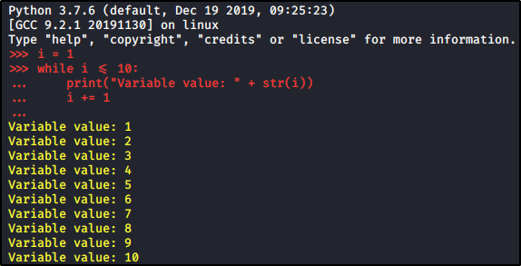

Looping in Python
Example:


For Loop:
It is a Loop with a known start and a DEFINED finish parameter, iterate for all elements in a structure
For Loop Definition:
for variable_name in list_example:
# Do something with “variable_name”
Example:


While Loop:
It is a Loop with a known start and an UNDEFINED finish, iterate until a certain condition is reached
For Loop Definition:
while boolean_parameter:
# Do something